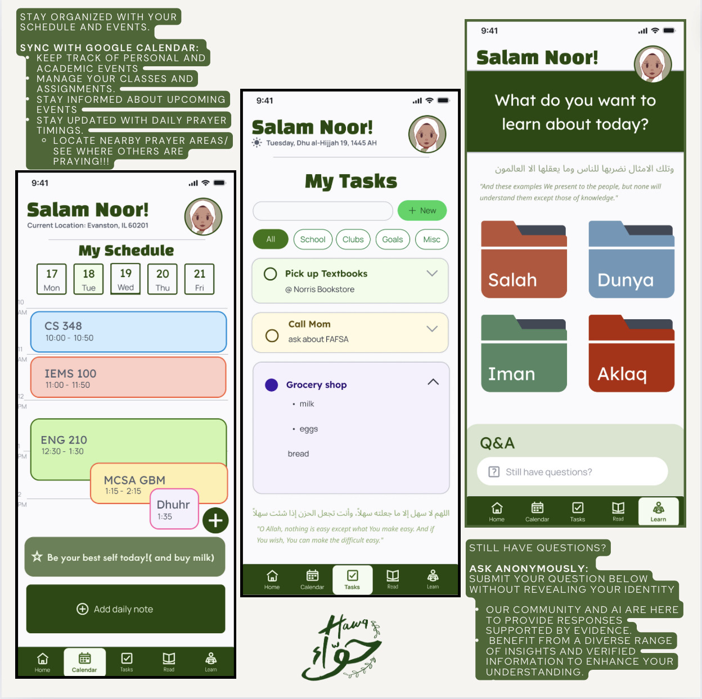

Overview ★
Hawa is an innovative mobile application designed to create a holistic digital space for Muslims to track their spiritual journey, connect with community, and access personalized Islamic resources. As both UX/UI Designer and Developer, I crafted an intuitive and aesthetically pleasing platform that bridges technology with spiritual growth.
